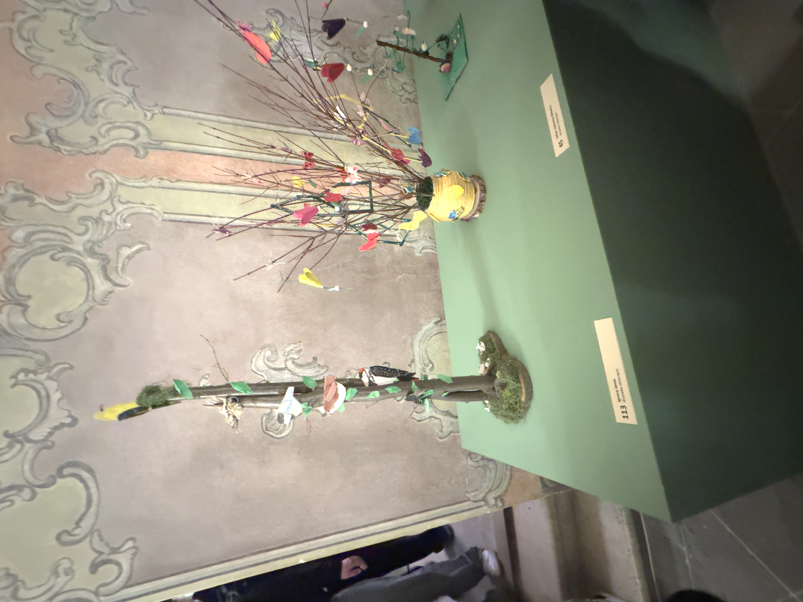
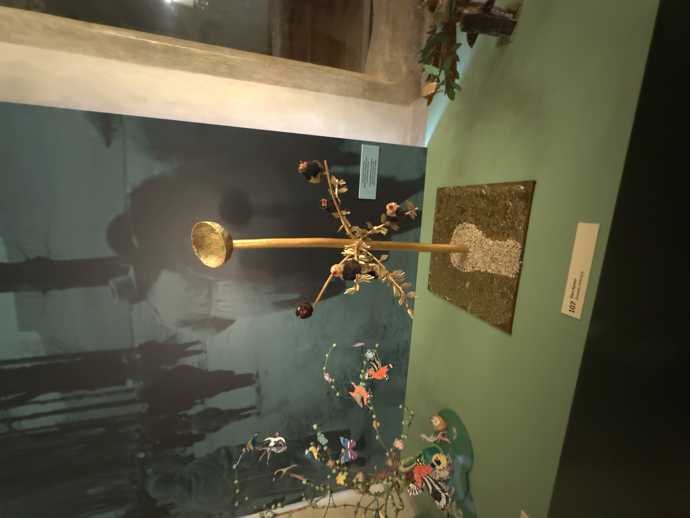
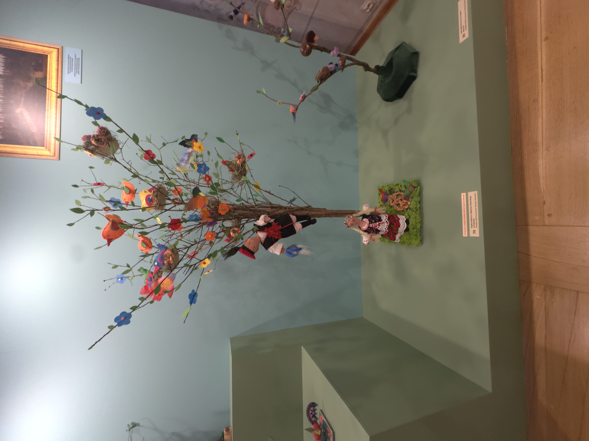
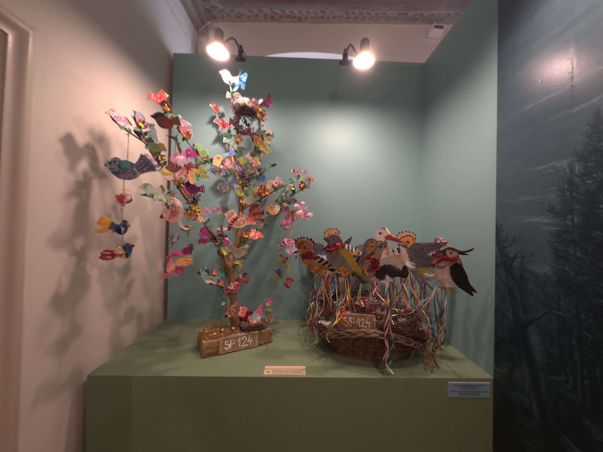
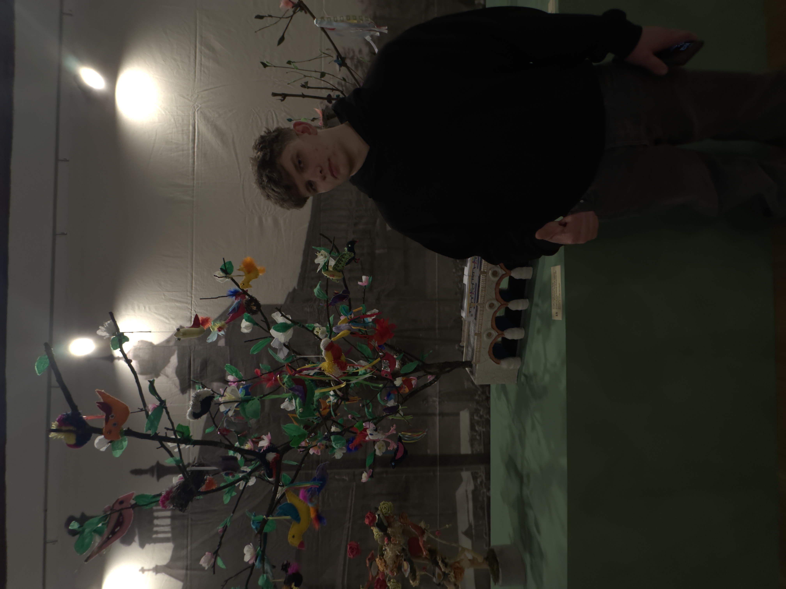
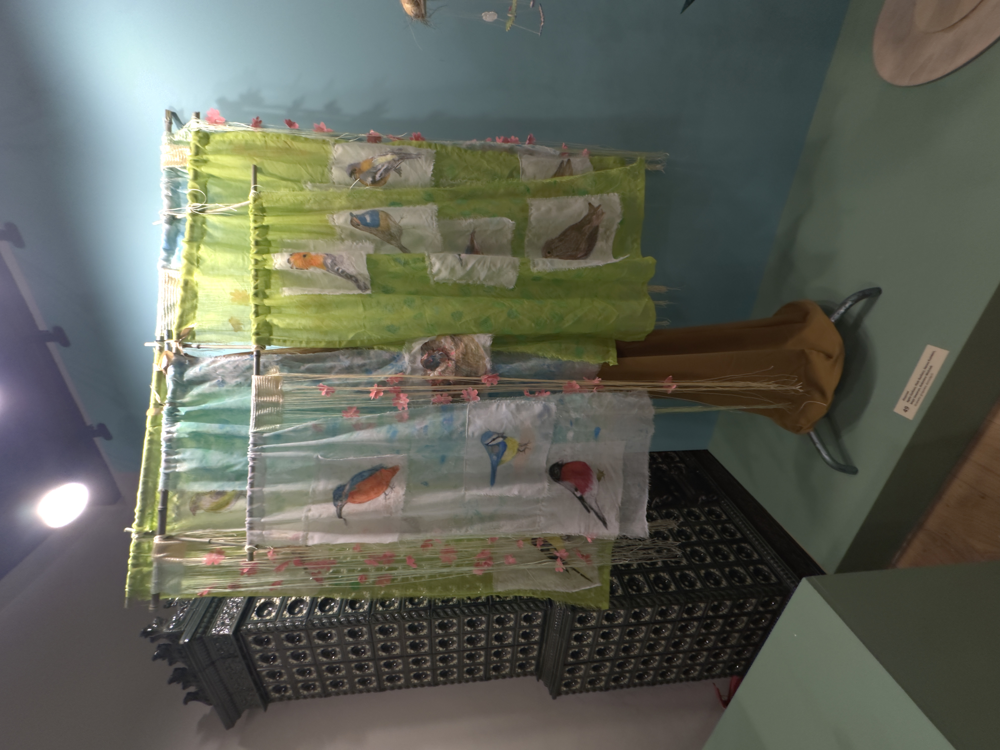
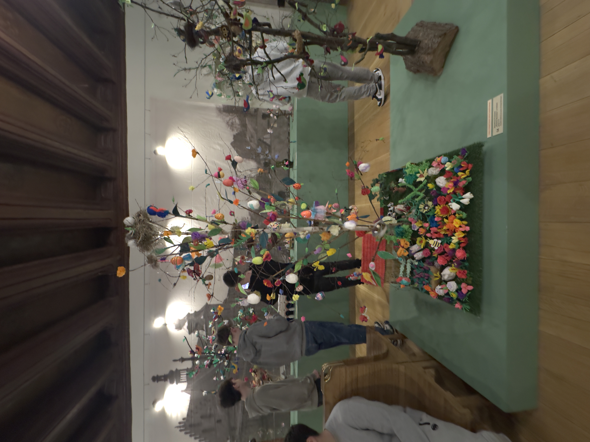
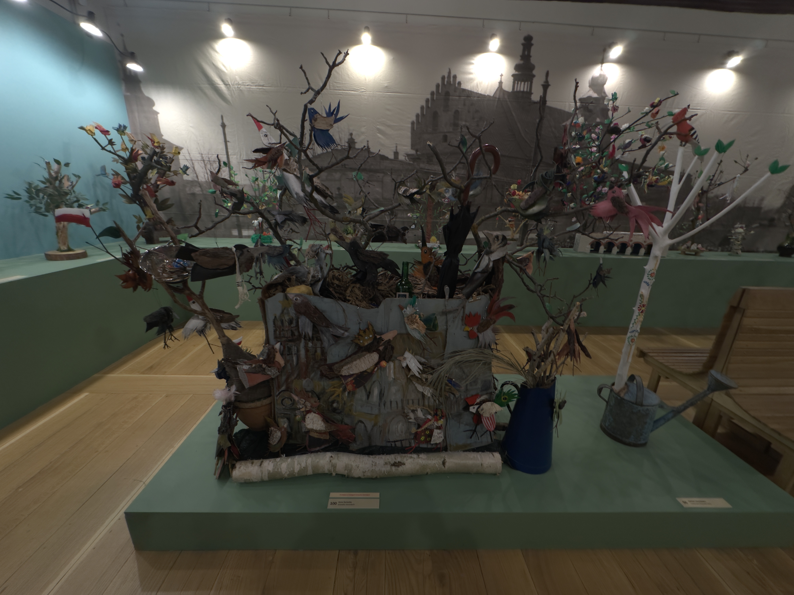
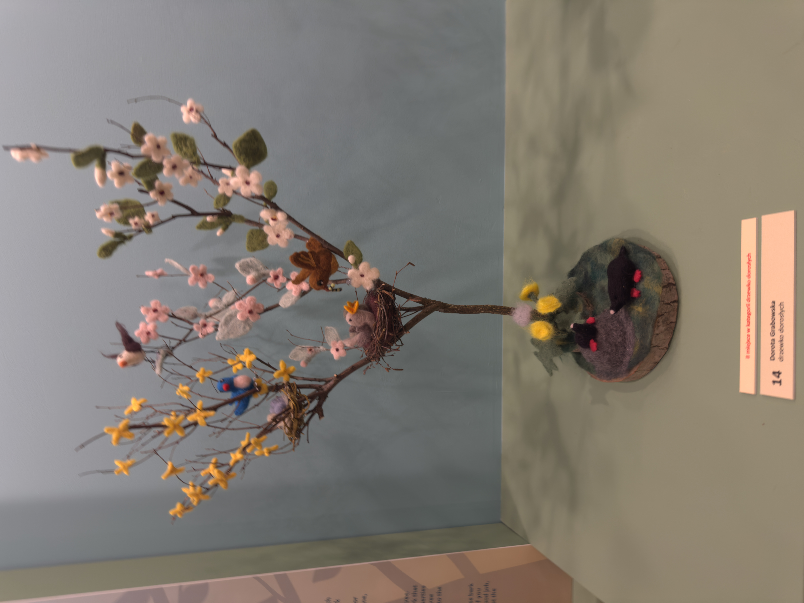

Historia
Wielkanoc w Krakowie: Od radosnego „Alleluja” po Drzewka Emausowe Wielkanoc to najstarsze i najważniejsze święto chrześcijańskie, celebrujące triumf życia nad śmiercią. Choć jej korzenie sięgają starożytności, w Krakowie obchody te nabrały wyjątkowego, lokalnego kolorytu, w którym sacrum przeplata się z barwnym folklorem.
Tradycja Emaus: Spacer w głąb historii Najbardziej rozpoznawalnym elementem krakowskiego Poniedziałku Wielkanocnego jest Emaus – uroczysty odpust odbywający się przy klasztorze Norbertanek na Zwierzyńcu. Nazwa nawiązuje do biblijnej wsi Emaus, do której zmierzali uczniowie Jezusa po zmartwychwstaniu.
W Krakowie tradycja ta sięga co najmniej XVI wieku. Dawniej był to czas wielkich procesji i spotkań towarzyskich mieszkańców, dziś to gwarny jarmark pełen tradycyjnych zabawek, pierników i radosnej atmosfery, która przyciąga tysiące krakowian i turystów.
Drzewko Emausowe: Symbol życia i wiosny Unikatowym symbolem krakowskich świąt, który w ostatnich latach przeżywa swój renesans, jest Drzewko Emausowe. To wyjątkowa pamiątka, którą niegdyś powszechnie kupowano na zwierzyneckim odpustu.
Co warto o nim wiedzieć?
- Konstrukcja: Tradycyjne drzewko składa się z drewnianego kijka, na którym osadzona jest figurka ptaka (często rzeźbionego w drewnie lub wykonanego z gliny) otoczonego gniazdem z pisklętami.
- Symbolika: Drzewko nawiązuje do przedchrześcijańskich wierzeń o drzewie życia, a w kontekście wielkanocnym symbolizuje odradzającą się przyrodę oraz nadzieję płynącą ze zmartwychwstania. Ptaki z kolei kojarzone były z duszami zmarłych powracającymi na ziemię pod postacią skrzydlatych stworzeń.
- Współczesność: Muzeum Krakowa regularnie organizuje konkursy na „Najpiękniejsze Drzewko Emausowe”, dzięki czemu ta piękna, rzemieślnicza tradycja nie odchodzi w zapomnienie i staje się artystyczną wizytówką krakowskiego Zwierzyńca. Ciekawostka: Dawniej wierzono, że przyniesienie do domu drzewka emausowego zapewnia rodzinie pomyślność i chroni przed nieszczęściem na cały nadchodzący rok.
Galeria









Konkurs
XII Konkurs Drzewek Emausowych – Podsumowanie
Tegoroczna edycja konkursu odbyła się w pierwszy dzień wiosny, 21 marca 2026 roku. Na placu Szczepańskim zaprezentowano aż 117 drzewek, które zachwycały różnorodnością technik i rozmiarów.
Kategorie konkursowe:
- Dziecięca: do 12 lat.
- Młodzieżowa: 12-18 lat.
- Dorośli: powyżej 18 lat.
- Rodzinna: (w tym grupy przedszkolne i szkolne).
- Grupy instytucjonalne dorosłych.
- Drzewko tradycyjne: rzeźbione w drewnie, malowane, z charakterystycznym ptaszkiem na sprężynce.
Kryteria oceny i Jury:
Jury pod przewodnictwem Anny Śliwy-Suchowiak oceniało prace pod kątem:
- Zgodności z symboliką „drzewka życia”,
- Estetyki i kompozycji,
- Pomysłowości i oryginalności,
- Samodzielności i jakości wykonania.
Formularz
Skontaktuj się z nami
Prosimy o wypełnienie formularza.